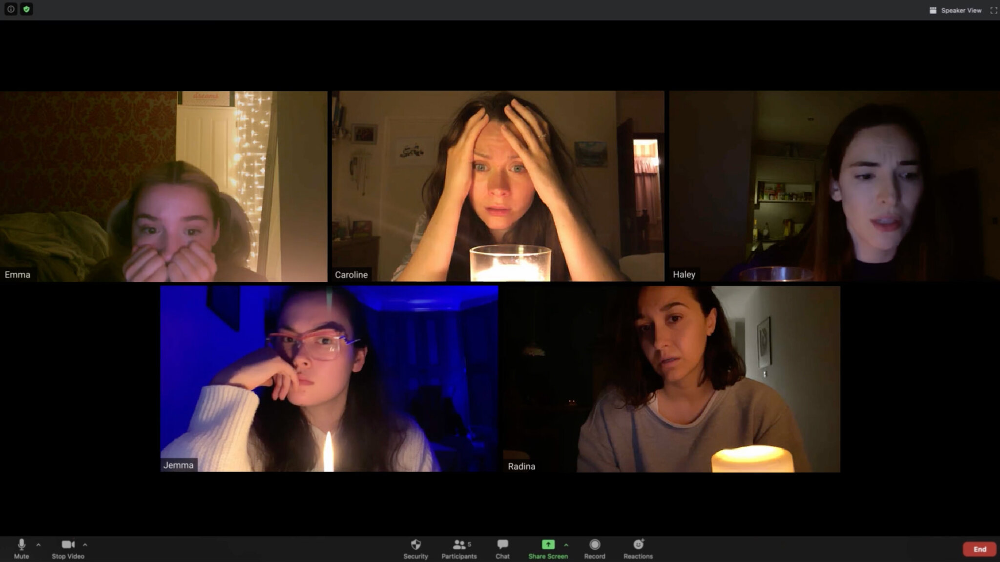
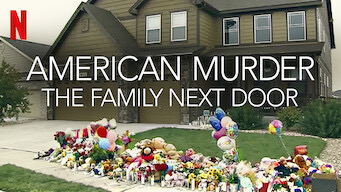
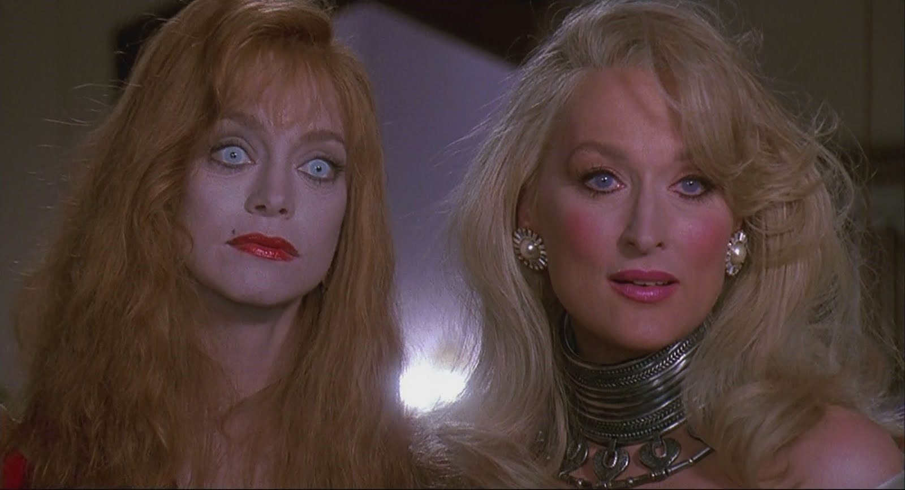

New/New to Me Movies: October
It's my goal to watch 100+ new/new to me movies a year. Here's a brief write-up of what I watched in October.
October was a great month for movies! In between re-watching old, beloved horror/Halloween flicks, I managed to watch 7 new/new-to-me movies last month.
Host (2020)
What a fun movie. I'm a big fan of the newfangled format of using a computer interface as the presentation of the movie (think Unfriended or Searching) and this was such an interesting take on the genre. A haunted Zoom meeting? Sounds potentially so silly, but I thought it was really well-done, especially considering it was made in quarantine. And honestly, any movie with a runtime like this is after my own heart. 56 minutes!
Dolly Parton: Here I Am (2019)
Who doesn't love Dolly Parton? She is just a delightful human. This was a really sweet doc that shows us the origins of Dolly and takes us through some of her biggest hits. Adorable anecdotes, especially the bits about how close the cast of 9 To 5 became. Picture slumber parties with Dolly, Jane, and Lily. Impossible to be in a bad mood after viewing.
American Murder: The Family Next Door (2020)
So, my husband and I watched this on our third wedding anniversary, which is an interesting choice. This one is a true crime doc made with personal videos, police body cam footage, etc. which makes for a compelling viewing. However, the story is just so depressing that it's difficult to recommend this one.
Slap Shot (1977)
Slap Shot rules. It's mildly jarring to see Paul Newman swear so much, but man is it watchable. Slap Shot is, upon first glance, another sports movie about a shitty team that limps to the finish line. Except for the fact that the hockey business in the 70s was apparently about kicking the other team's ass, and cousin "business is a-boomin." Some really funny little moments in this picture. Definitely makes me want to read the book.
Mayhem (2017)
Another fun movie. Samara Weaving is really great-- this, Bill & Ted 3, Ready Or Not-- in fact, this could almost be considered a sister movie of Ready Or Not in it's tone and level of cartoonish violence. I was hesitant to watch a zombie pandemic movie set in the not-too-distant future, but I'm really glad I watched this one. Now, it doesn't necessarily rewrite any rules or innovate the genre, but it's breakneck pace and frenetic energy made for a great "turn your brain off and eat popcorn" viewing.
Death Becomes Her (1992)
Boy, did I love this movie! I'm a sucker for Meryl, and I was really excited to see her in a dark comedy like this. I know this one's a cult classic, but it should be a mainstream classic because it's just great. It takes that frenemy/rivalry relationship that always seems to develop between women and heightens it to the most extreme places. And the visual effects are so impressive for 1992. And you've never seen Bruce Willis so neutered. Really great. I just watched it on 10/28 and I already want to see it again.
Rewatch Rewind (I've seen this before, but it's worth mentioning)
Jennifer's Body (2009)
This movie RULES. It, much like Megan Fox herself, was not appreciated properly at the time. Directed by the great Karyn Kusama and written by Diablo Cody, JENNIFER'S BODY is a film about a
cheerleader who turns into a male-devouring demon after a botched satanic sacrifice. It plays on the cruelness of high school girls-- we've all been bullied by one of these
girls but most of us did not have our souls devoured by our local mean girl-- and is also hilarious with some pretty rad kills throughout. Amanda Seyfried is equally great.
In fact, this and DEATH BECOMES HER would make an excellent double feature.
Thanks for reading!